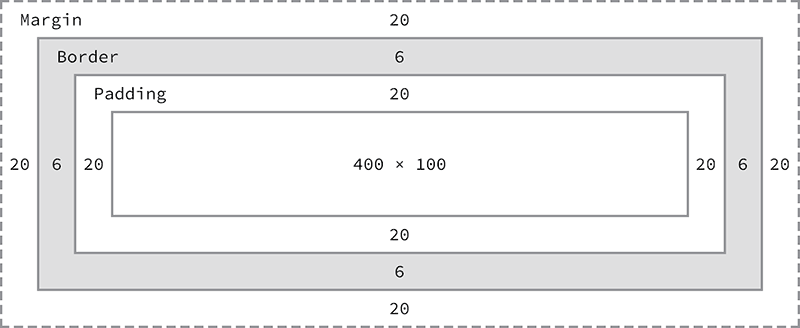
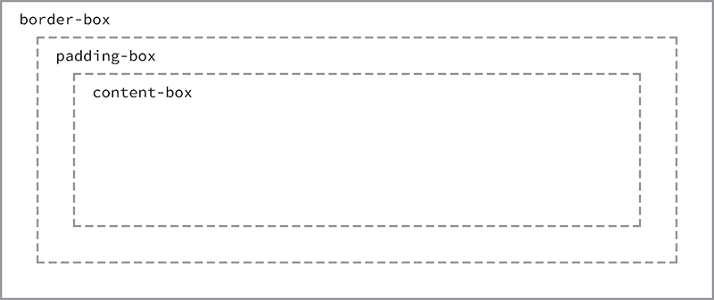
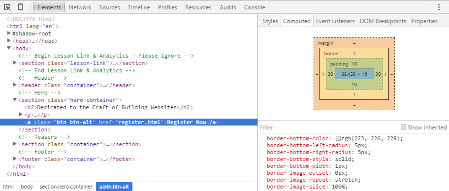
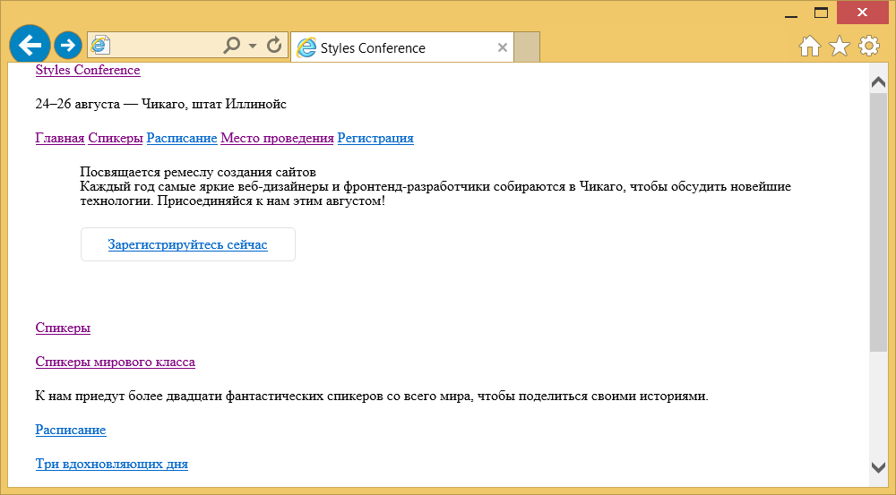

Открываем блочную модель
Мы познакомились с HTML и CSS, знаем как они выглядят и как выполнить некоторые основы. Теперь мы собираемся погрузиться немного глубже и подробно рассмотреть, как элементы отображаются на странице и задаются их размеры.
В процессе мы обсудим тему, известную как блочная модель и как она работает с HTML и CSS. Мы также рассмотрим несколько новых свойств CSS и используем некоторые значения размеров, о которых рассказывали в уроке 3. Давайте начнём.
Как отображаются элементы?
Прежде чем перейти к блочной модели, нам надо понимать, как отображаются элементы. В уроке 2 мы рассмотрели разницу между блочными и строчными элементами. Быстро напомним, что блочные элементы занимают всю доступную ширину независимо от их содержимого и начинаются с новой строки. Строчные элементы занимают ширину, которая требуется для содержимого и выстраиваются на одной строке, друг за другом. Блочные элементы, как правило, используются для больших кусков контента, таких как заголовки и структурные элементы. Строчные элементы, как правило, применяются для маленьких частей содержимого, таких как несколько слов, выделенных жирным или курсивным начертанием.
display
Как именно отображаются элементы — как блочные или строчные или как-то ещё, определяется свойством display. Каждый элемент содержит значение свойства display по умолчанию, но как и с любым другим значением свойств, это значение может быть переписано. Есть немало значений для свойства display, но наиболее распространённые это block, inline, inline-block и none.
Мы можем изменить значение свойства display элемента, выбрав этот элемент в CSS и задав новое значение свойства display. Значение block сделает этот элемент блочным.
p {
display: block;
}Значение inline сделает этот элемент строчным.
p {
display: inline;
}Самое интересное это значение inline-block. Его использование позволит элементу вести себя как блочный, включая все свойства блочной модели (которые мы вскоре рассмотрим). Однако, элемент будет отображаться на строке с другими элементами, а не будет начинаться с новой строки по умолчанию.
p {
display: inline-block;
}Демонстрация inline-block
Пространство между строчно-блочными элементами
Одним из важных отличий строчно-блочных элементов является то, что они не всегда соприкасаются или отображается непосредственно друг за другом. Обычно между двумя элементами будет небольшое пространство. Это пространство, возможно и раздражает, но это нормально. Мы обсудим, почему оно существует и как его убрать в следующем уроке.
В заключение, используя значение none полностью скрываем элемент и отображаем страницу, словно элемента не существует. Любые элементы, вложенные в такой элемент, также будут скрыты.
div {
display: none;
}Знание, как отображаются элементы и как изменить display довольно важно, так как display оказывает влияние на отображение блочной модели. В процессе обсуждения блочной модели мы обязательно взглянем на эти разные последствия и как они могут повлиять на представление элемента.
Что такое блочная модель?
В соответствии с концепцией блочной модели, каждый элемент на странице представляет собой прямоугольный блок и может иметь ширину, высоту, поля, границы и отступы.
Это стоит повторить: Каждый элемент на странице представляет собой прямоугольный блок.
Рис. 4.01. Когда мы смотрим на каждый элемент по отдельности, то можем увидеть, что все они прямоугольны, независимо от их представленных форм
Каждый элемент на каждой странице соответствует блочной модели, так что это невероятно важно. Давайте взглянем на неё, наряду с несколькими новыми свойствами CSS, чтобы лучше понять, как мы можем с этим работать.
Работа с блочной моделью
Каждый элемент представляет собой прямоугольный блок и есть несколько свойств, которые устанавливают размер этого блока. Внутренность блока определяется шириной и высотой элемента, который может быть задан свойством display, содержимым элемента или свойствами width и height. padding и затем border расширяют размеры блока наружу от ширины и высоты элемента. Наконец, любой указанный margin идёт за пределами рамки.
Каждая часть блочной модели соответствует свойству CSS: width, height, padding, border и margin.
Взглянем на эти свойства внутри некоторого кода:
div {
border: 6px solid #949599;
height: 100px;
margin: 20px;
padding: 20px;
width: 400px;
}В соответствии с блочной моделью общая ширина элемента может быть рассчитана по следующей формуле:
margin-right + border-right + padding-right + width + padding-left + border-left + margin-leftДля сравнения, в соответствии с блочной моделью общая высота элемента может быть рассчитана по следующей формуле:
margin-top + border-top + padding-top + height + padding-bottom + border-bottom + margin-bottom
Рис. 4.02. Блочная модель включает базовую высоту и ширину плюс padding, border и margin
Используя эти формулы, мы можем найти общую высоту и ширину блока из нашего примера.
Ширина: 492px = 20px + 6px + 20px + 400px + 20px + 6px + 20px
Высота: 192px = 20px + 6px + 20px + 100px + 20px + 6px + 20pxБлочная модель, без сомнения, одна из наиболее запутанных частей HTML и CSS. Мы устанавливаем значение свойства width как 400 пикселей, но фактическая ширина нашего элемента 492 пикселя. По умолчанию блочная модель коробка аддитивна. Таким образом, для определения фактического размера блока мы должны принять во внимание поля, границы и отступы для всех четырёх сторон блока. Наша ширина включает не только значение свойства width, но и размер левого и правого поля, левую и правую границу, левые и правые отступы.
Пока многие из этих свойств не несут большого смысла и это нормально. Для уточнения давайте поближе посмотрим на все эти свойства width, height, padding, border и margin, которые формируют блочную модель.
width и height
У каждого элемента есть ширина и высота по умолчанию. Эта ширина и высота может быть равна нулю, но браузеры по умолчанию отображают каждый элемент с размером. В зависимости от того, как отображается элемент, ширина и высота по умолчанию может быть соответствующей. Если элемент является ключевым в макете страницы, для него может потребоваться задать определённые значения свойств width и height. В этом случае значения свойств для не строчных элементов могут быть указанными.
width
По умолчанию ширина элемента основана на значении display. У блочных элементов ширина по умолчанию 100% и занимает всё доступное горизонтальное пространство. Строчные и строчно-блочные элементы расширяются и сжимаются горизонтально для размещения их содержимого. Строчные элементы не могут иметь фиксированный размер, таким образом, ширина и высота относятся только к не строчным элементам. Чтобы задать определённую ширину для не строчных элементов, используйте свойство width:
div {
width: 400px;
}height
Высота элемента по умолчанию определяется его содержимым. Элемент будет расширяться и сжиматься по вертикали при необходимости, чтобы вместить его содержимое. Установить определённую высоту для не строчных элементов можно через свойство height:
div {
height: 100px;
}Размеры строчно-блочных элементов
Пожалуйста, помните, что строчные элементы не принимают свойства width и height и любые их значения. Блочные и строчно-блочные элементы, однако, принимают свойства width и height и соответствующие им значения.
margin и padding
В зависимости от элемента, браузеры могут применять отступы и поля по умолчанию для элемента, чтобы помочь с удобочитаемостью. Мы, как правило, видим это на текстовых элементах. Поля и отступы по умолчанию для этих элементов могут отличаться от браузера к браузеру и от элемента к элементу. В уроке 1 мы обсуждали использование сброса CSS чтобы все эти значения по умолчанию стали нулевыми. Это позволяет нам работать с нуля и задать собственные значения.
margin
Свойство margin позволяет нам установить пространство, которое окружает элемент. margin находятся за пределами любых границ и полностью прозрачны в цвете. Они могут использоваться для позиционирования элементов в конкретном месте на странице или добавить пустое пространство, сохраняя все другие элементы на безопасном расстоянии. Вот свойство margin в действии:
div {
margin: 20px;
}Одной из причуд margin являются вертикальные значения, сверху и снизу, они не применяются к строчным элементам, но применяются к блочным и строчно-блочным элементам.
padding
Свойство padding очень похоже на свойство margin, однако располагается внутри границ элемента. Свойство padding используется, чтобы задать пространство непосредственно внутри элемента. Вот код:
div {
padding: 20px;
}Свойство padding в отличие от margin работает вертикально для строчных элементов. Вертикальный padding может сливаться со строкой выше или ниже данного элемента, но будет отображаться.
margin и padding для строчных элементов
Строчные элементы ведут себя немного по-другому, чем блочные и строчно-блочные элементы, когда дело доходит до отступов и полей. Для строчных элементов margin работает только горизонтально — слева и справа от элементов. padding работает на всех четырёх сторонах строчных элементов, однако вертикальные поля сверху и снизу могут выходить за пределы строки выше и ниже элемента.
Отступы и поля работают как обычно для блочных и строчно-блочных элементов.
Установка margin и padding
В CSS существует несколько способов установить значения определённых свойств. Мы можем использовать обычную запись, в которой перечисляется несколько свойств и значений одно за другим, в котором у каждого значения есть собственное свойство. Или мы можем использовать сокращённую запись, перечисляя несколько значений одного свойства. Не у всех свойств есть сокращённый вариант, таким образом, мы должны убедиться что используем правильное свойство и структуру значений.
Свойства margin и padding существуют в обычном и сокращённом виде. При использовании сокращённого свойства margin, чтобы установить одно значение для всех четырёх сторон элемента мы задаём одно значение:
div {
margin: 20px;
}Чтобы установить одно значение для верхней и нижней стороны, а другое значение для левой и правой стороны элемента, укажите два значения: вначале сверху и снизу, затем слева и справа. Здесь для <div> мы задаём отступы 10 пикселей сверху и снизу и 20 пикселей слева и справа:
div {
margin: 10px 20px;
}Чтобы установить уникальные значения для всех четырёх сторон элемента, укажите эти значения в следующем порядке: сверху, справа, снизу и слева, двигаясь по часовой стрелке. Здесь мы задаём для <div> отступы 10 пикселей сверху, 20 пикселей справа, 0 пикселей снизу и 15 пикселей слева.
div {
margin: 10px 20px 0 15px;
}Использование свойства margin или padding с любым числом значений считается сокращением. В обычной записи мы можем установить значение только для одной стороны используя уникальные свойства. После имени каждого из свойств (margin или padding в данном случае) идёт дефис и сторона блока, к которой должно применяться значение: top, right, bottom или left. Например, свойство padding-left принимает только одно значение и установит левое поле для этого элемента, свойство margin-top принимает только одно значение и установит верхний отступ для этого элемента.
div {
margin-top: 10px;
padding-left: 6px;
}Когда мы хотим определить только одно значение margin или padding, то лучше использовать обычную запись. Это сохраняет наш код наглядным и помогает избежать путаницы по пути вниз. Например, вы действительно хотите установить margin в 0 сверху, справа и слева элемента или же на самом деле хотите установить margin снизу в 10 пикселей? Использование обычной записи для свойств и значений помогает нам это делать осмысленно. С другой стороны, когда имеешь дело с тремя или более значениями, сокращение невероятно полезно.
Цвет отступов и полей
Свойства margin и padding полностью прозрачны и не принимают какие-либо цветовые значения. Но будучи прозрачными они показывают цвет фона связанных элементов. Для margin мы видим цвет фона родительского элемента, а для padding видим цвет фона элемента, к которому применяется padding.
Границы
Границы располагаются между отступами и полями, создавая рамку вокруг элемента. Для свойства border требуется три значения: ширина, стиль и цвет. Сокращённая запись для border задаётся этом же порядке — ширина, стиль, цвет. В обычной записи эти три значения могут быть разбиты по свойствам border-width, border-style и border-color. Обычная запись полезна для изменения или переписывания отдельного значения границы.
Ширина и цвет границ могут быть определены с помощью обычных единиц размера и цвета CSS, как описано в уроке 3.
У границ может быть различный внешний вид. Наиболее распространённые значения solid, double, dashed, dotted и none, но есть и несколько других на выбор.
Вот код для сплошной серой границы толщиной 6 пикселей для всех четырёх сторон <div>:
div {
border: 6px solid #949599;
}Демонстрация border
Границы для отдельных сторон
Как и со свойствами margin и padding границы могут быть размещены на одной стороне элемента за раз при желании. Это требует новых свойств: border-top, border-right, border-bottom и border-left. Значения для этих свойств такие же, как и для border: ширина, стиль и цвет. При желании можно сделать так, чтобы граница появлялась только внизу элемента:
div {
border-bottom: 6px solid #949599;
}Кроме того, стилями для отдельных сторон можно управлять на ещё более тонком уровне. Например, если мы хотим изменить только ширину нижней границы, то можем использовать следующий код:
div {
border-bottom-width: 12px;
}Такое довольно специфичное свойство границы включают в себя ряд разделённых дефисом слов, начинающихся с border, затем идёт выбранная сторона — top, right, bottom или left, а затем width, style или color, в зависимости от желаемого свойства.
Радиус границы
Пока мы рассматриваем границы и их разные свойств, нам нужно изучить свойство border-radius, которое позволяет нам закруглять углы элемента.
Свойство border-radius принимает единицы размера, в том числе проценты и пиксели, которые определяют радиус скругления углов элемента. Единственное значение закругляет все четыре угла элемента в равной степени; два значения закругляют левый верхний/правый нижний и правый верхний/левый нижний углы в таком порядке; четыре значения закругляют левый верхний, правый верхний, правый нижний и левый нижний углы в таком порядке.
При рассмотрении порядка, когда несколько значений применяются к свойству border-radius (заодно к margin и padding), помните, что они идут по часовой стрелке, начиная с левого верхнего угла элемента.
div {
border-radius: 5px;
}Демонстрация border-radius
Свойство border-radius также может быть разбито на ряд свойств, которые позволяют нам изменить радиусы отдельных углов элемента. Эти свойства начинается с border, продолжаются с положения угла по вертикали (top или bottom) и горизонтали (left или right) и завершаются radius. Например, для изменения правого верхнего угла <div> может быть использовано свойство border-top-right-radius.
div {
border-top-right-radius: 5px;
}Размеры блока
До сих пор блочная модель была аддитивной. Если вы установили для width 400 пикселей, затем добавили 20 пикселей padding и border 10 пикселей на каждой стороне, фактическая полная ширина элемента становится 460 пикселей. Помните, мы должны сложить значения свойств width, padding и border вместе, чтобы получить реальную полную ширину элемента.
Блочная модель, однако, может быть изменена, чтобы вычисления происходили иначе. CSS3 ввёл свойство box-sizing, которое позволяет нам точно менять, как блочная модель работает и как вычисляются размеры элемента. Это свойство принимает три основных значения — content-box, padding-box и border-box, каждое из которых оказывает несколько разное влияние на вычисление размера блока.
content-box
Значение content-box является значением по умолчанию, оставляя блочную модель в качестве аддитивной. Если мы не используем свойство box-sizing, то это будет значением по умолчанию для всех элементов. Размер элемента начинается со свойств width и height, далее к ним добавляются значения свойств padding, border или margin .
div {
-webkit-box-sizing: content-box;
-moz-box-sizing: content-box;
box-sizing: content-box;
}Свойства и значения специфичные для браузера
Что означают все эти дефисы и буквы в свойстве box-sizing?
Когда был представлен CSS3, браузеры постепенно начали поддерживать разные свойства и значения, включая свойство box-sizing, путём добавления вендорных префиксов. Когда части спецификации CSS3 будут завершены и выпущены новые версии браузеров, эти префиксы станут всё менее и менее актуальными. Со временем префиксы вряд ли будут проблемой, однако, они всё ещё обеспечивают поддержку некоторых старых браузеров. Мы можем работать с ними время от времени и, возможно, даже захотим использовать их, если нам нужна поддержка старых браузеров.
Вендорные префиксы можно увидеть для свойств и значений, всё зависит от спецификации CSS. Здесь они показаны для свойства box-sizing. Разработчики браузеров были свободны в выборе, когда использовать префикс, а когда нет. Таким образом, одни свойства и значения требуют префиксы для некоторых браузеров, а другие нет.
Ниже, когда свойство или значение требует вендорный префикс, то префикс будет использоваться только для представления этого свойства или значения (в интересах сохранения нашего кода простым и кратким). Не забудьте добавить необходимые префиксы, когда вы станете писать реальный код.
Для справки, наиболее распространённые префиксы изложены здесь:
- Mozilla Firefox: -moz-
- Microsoft Internet Explorer: -ms-
- Webkit (Google Chrome и Apple Safari): -webkit-
padding-box
Значение padding-box изменяет блочную модель путём включения всех значений свойства padding внутри width и height элемента. При использовании значения padding-box, если у элемент width равно 400 пикселей и padding 20 пикселей вокруг всех сторон, фактическая ширина останется 400 пикселей. При увеличении padding на любое значение, размер содержимого внутри элемента сжимается пропорционально.
Если мы добавим border или margin, эти значения будут добавлены к свойствам width или height для вычисления полного размера блока. Например, если мы добавим border 10 пикселей и padding 20 пикселей вокруг всех сторон элемента, у которого width 400 пикселей, фактическая полная ширина будет 420 пикселей.
div {
box-sizing: padding-box;
}border-box
Наконец, значение border-box изменяет блочную модель так, чтобы любые значения свойств border или padding включались внутри width и height элемента. При использовании значения border-box, если для элемента указаны width 400 пикселей, padding 20 пикселей и border 10 пикселей вокруг всех сторон, фактическая ширина останется 400 пикселей.
Если мы добавим margin, эти значения должны учитываться для расчёта полного размера блока. Независимо от того, какое значение свойства box-sizing применяется, любые значения margin не будут добавляться в вычисления полного размера элемента.
div {
box-sizing: border-box;
}
Рис. 4.03. Различные значения box-sizing позволяют по разному вычислять ширину элемента и блока целиком
Выбор размера блока
Вообще говоря, лучшее значение box-sizing для применения — это border-box. Это значение намного упрощает нам математику. Если мы хотим, чтобы весь элемент был 400 пикселей в ширину, он останется 400 пикселей в ширину, независимо от того, какие значения padding или border мы к нему добавляем.
Кроме того, мы можем легко смешивать значения длины. Скажем, мы хотим, чтобы наш блок занимал 40% в ширину. Добавление padding 20 пикселей и border 10 пикселей для всех сторон элемента не сложно и мы по-прежнему можем гарантировать, что фактическая ширина нашего блока останется 40%, несмотря на использование пикселей в другом месте.
Единственный недостаток свойства box-sizing в том, что как часть спецификации CSS3 она не поддерживается во всех браузерах, особенно не хватает поддержки в старых версиях. К счастью, это становится всё менее и менее актуальным, поскольку выходят новые версии. Скорее всего, мы можем безопасно использовать свойство box-sizing, но если вы заметили какие-то проблемы, стоит посмотреть с каким браузером они связаны.
Инструменты разработчика
В большинстве браузеров есть то, что известно как Инструменты разработчика. Эти инструменты позволяют нам проверить элемент на странице, увидеть, где этот элемент живёт в HTML-документе и посмотреть, какие свойства и значения CSS к нему применяются. Большинство из этих инструментов также включают в себя схему блочной модели, чтобы показать вычисленный размер элемента.
Чтобы увидеть Инструменты разработчика в Google Chrome, откройте меню, выберите «Дополнительные инструменты», а затем «Инструменты разработчика». После этого откроется панель в нижней части окна браузера, которая предлагает несколько инструментов для проверки нашего кода.
Щелчок по стрелке в нижней части этой панели позволяет выделять и щёлкать по разным элементам на странице, чтобы узнать о них больше информации.
После выбора элемента мы увидим несколько вкладок в правой части панели «Elements» в инструментах разработчика. Выбор вкладки «Computed» покажет нам подробную блочную модель для нашего выбранного элемента.
Поиграйте с инструментами разработчика, будь они в Google Chrome, Mozilla Firefox, Apple Safari или других браузерах; можно многое узнать просматривая наш код. Я вообще оставляю панель инструментов всегда открытыми при написании HTML и CSS. И также часто проверяю код других сайтов, чтобы увидеть, как они сделаны.

Рис. 4.04. Инструменты разработчика Google Chrome, которые помогают нам проверять HTML и CSS на любой странице
Блочная модель является одной из самых запутанных частей при изучении HTML и CSS. Она также является одной из самых мощных частей HTML и CSS и как только мы это освоим, практически всё остальное, вроде позиционирования содержимого, пойдёт довольно легко.
На практике
Давайте перепрыгнем обратно к нашему сайту Styles Conference к центральной части страницы и добавим ещё немного содержимого.
- Начнём настройку размера нашего блока с версии border-box, которая упростит установку размеров всех наших элементов. В нашем файле main.css, чуть ниже сброса, добавим комментарий, чтобы определить код для создания нашей сетки и макета сайта. Мы положим всё это ниже сброса, чтобы они шли в правильном порядке в каскаде.
Отсюда мы можем использовать универсальный селектор *, наряду с универсальными псевдоэлементами *:before и *:after для выбора всех мыслимых элементов и изменения box-sizing на border-box. Помните, что мы собираемся включить вендорные префиксы для свойства box-sizing, так как это относительно новое свойство.
/* ======================================== Сетка ======================================== */ *, *:before, *:after { -webkit-box-sizing: border-box; -moz-box-sizing: border-box; box-sizing: border-box; } Далее мы хотим создать класс, который будет служить контейнером для наших элементов. Мы можем использовать этот класс для различных элементов, чтобы установить общую ширину, выровняв элементы по центру страницы и применить некоторые общие горизонтальные поля.
Чуть ниже набора универсальных селекторов создадим селектор класса container. В этом селекторе зададим width как 960 пикселей, padding слева и справа по 30 пикселей, margin сверху и снизу как 0, а слева и справа как auto.
Установка width сообщает браузеру какая ширина элемента с классом container однозначно должна быть. Использование margin слева и справа как auto в сочетании с width позволяет браузеру автоматически выставить равные левые и правые поля для элемента, таким образом, выровняв его по центру на странице. Наконец, padding слева и справа гарантирует, что наше содержимое не занимает непосредственно края элемента и обеспечивает небольшое пространство для содержимого.
.container { margin: 0 auto; padding-left: 30px; padding-right: 30px; width: 960px; }Теперь у нас есть класс container доступный для использования, пойдём вперёд и применим этот класс в HTML к элементам <header> и <footer> на каждой странице, включая файлы index.html, speakers.html, schedule.html, venue.html и register.html.
<header class="container">...</header> <footer class="container">...</footer>Пока мы здесь, давайте расположим по центру остальное содержимое наших страниц. На главной странице (файл index.html) добавим класс container к каждому элементу <section> на странице, по одному на героя нашего раздела (раздел, который представляет нашу конференцию) и одному для раздела тизеров.
<section class="container">...</section>Кроме того, обернём все элементы <h1> на каждой странице элементом <section> с классом container.
<section class="container"> <h1>...</h1> </section>Мы позже вернёмся и настроим эти элементы и классы, но сейчас движемся в правильном направлении.
Теперь, когда всё наше содержимое выровнено по центру, установим некоторое вертикальное пространство между элементами. Для начала разместим 22-пиксельный нижний margin для некоторых заголовков и абзацев. Мы добавим и прокомментируем стили ниже стилей сетки.
/* ======================================== Типографика ======================================== */ h1, h3, h4, h5, p { margin-bottom: 22px; }Мы намеренно пропустили <h2> и <h6>, так как по дизайну не требуются отступы для элементов <h2> и мы не будем использовать любые элементы <h6> в данный момент.
Давайте также попробуем наши силы в создании границ и некоторых закругленных уголков. Мы начнём с размещения кнопки в верхней части элемента <section> на главной странице, чуть ниже заголовка.
Ранее мы добавили элемент <a> внутри <section>. Давайте добавим классы btn и btn-alt к этой ссылке.
<a class="btn btn-alt">...</a>Теперь создадим некоторые стили для этих классов в нашем CSS. Ниже нашего набора правил типографики сделаем новый раздел для кнопок.
Для начала добавим класс btn и применим некоторые общие стили, которые будут для всех кнопок. Мы хотим, чтобы у всех кнопок был border-radius 5 пикселей. Кнопки должны отображаться как inline-block, поэтому мы можем добавить поля со всех четырёх сторон без проблем и уберём все margin.
/* ======================================== Кнопки ======================================== */ .btn { border-radius: 5px; display: inline-block; margin: 0; }Мы также хотим включить стили, характерные для этой кнопки, которые делаем с помощью класса btn-alt. Сюда добавим однопиксельную рамку серого цвета, padding 10 пикселей сверху и снизу и padding 30 пикселей слева и справа от кнопки.
.btn-alt { border: 1px solid #dfe2e5; padding: 10px 30px; }Применение двух классов btn и btn-alt к одному элементу <a> позволяет накладывать эти стили, отображая их для одного элемента.
Поскольку мы работаем с главной страницей, давайте также добавим небольшой padding к элементу <section>, содержащий наш элемент <a> с классами btn и btn-alt. Мы сделаем это путём добавления атрибута class со значением hero к элементу <section>, наряду с классом container, так как это будет ведущий раздел нашего сайта.
<section class="hero container"> ... </section>Далее мы хотим создать новый раздел в файле CSS для стилей главной страницы и как только будем готовы, станем использовать класс hero, чтобы установить padding для всех четырёх сторон элемента <section>.
/* ======================================== Главная страница ======================================== */ .hero { padding: 22px 80px 66px 80px; }
Наш сайт начинает складываться воедино, особенно главная страница.

Рис. 4.05. Главная страница Styles Conference постепенно принимает форму после нескольких обновлений
Демонстрация и исходный код
Ниже вы можете просмотреть сайт Styles Conference в его нынешнем состоянии, а также скачать исходный код сайта на данный момент.
Просмотр сайта Styles Conference или Скачать исходный код
Универсальный селектор
На первом этапе данного упражнения мы представили универсальный селектор. В CSS звёздочка (*) это универсальный селектор, который выбирает каждый элемент. Вместо перечисления всех отдельных элементов мы можем использовать звёздочку для выбора всех элементов.
Псевдоэлементы :before и :after также упомянутые на этом этапе — это элементы, которые могут динамически генерироваться через CSS. Мы не станем применять эти элементы в нашем проекте, однако, при упоминании универсального селектора также хорошим тоном будет включить эти псевдоэлементы на случай, если они когда-нибудь появятся.
Резюме
Возьмите пирожок и погладьте себя по голове. Я подожду.
Изучение всех разных частей блочной модели — это немалый подвиг. Эти понятия, даже кратко изложенные, заняли довольно много времени до полного освоения, но мы находимся на верном пути.
Вкратце, в этом уроке мы говорили о следующем:
- Как отображаются разные элементы.
- Что такое блочная модель и почему она так важна.
- Как изменить размер элементов с учётом высоты и ширины.
- Как добавить к элементам margin, padding и border.
- Как изменить размер элементов и влияние блочной модели.
Теперь у нас есть лучшее понимание того, как отображаются элементы и вычисляются их размеры. Настало время переходить к позиционированию этих элементов.
Ресурсы и ссылки
- The CSS Box Model via CSS-Tricks
- HTML Borders via Quackit.com
См. также

Все материалы сайта доступны по лицензии Creative Commons «Attribution-NonCommercial» («Атрибуция — Некоммерческое использование») 4.0 Всемирная, если не указано иное.